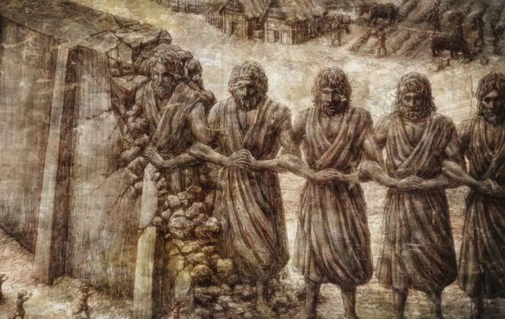
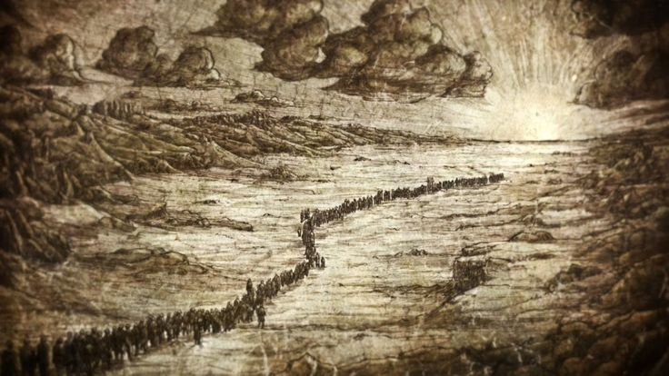
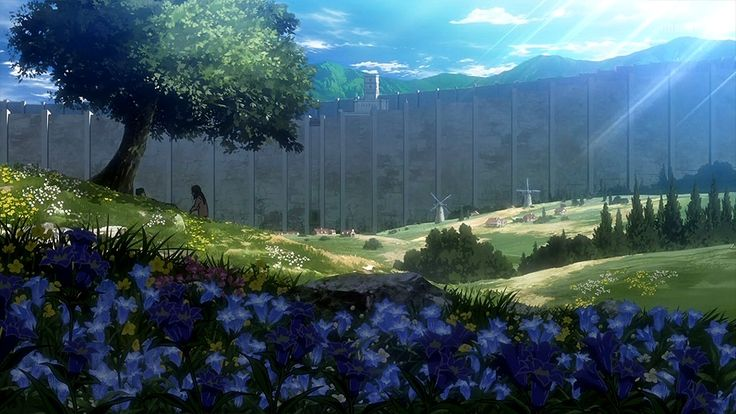
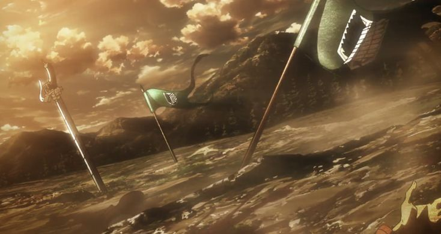
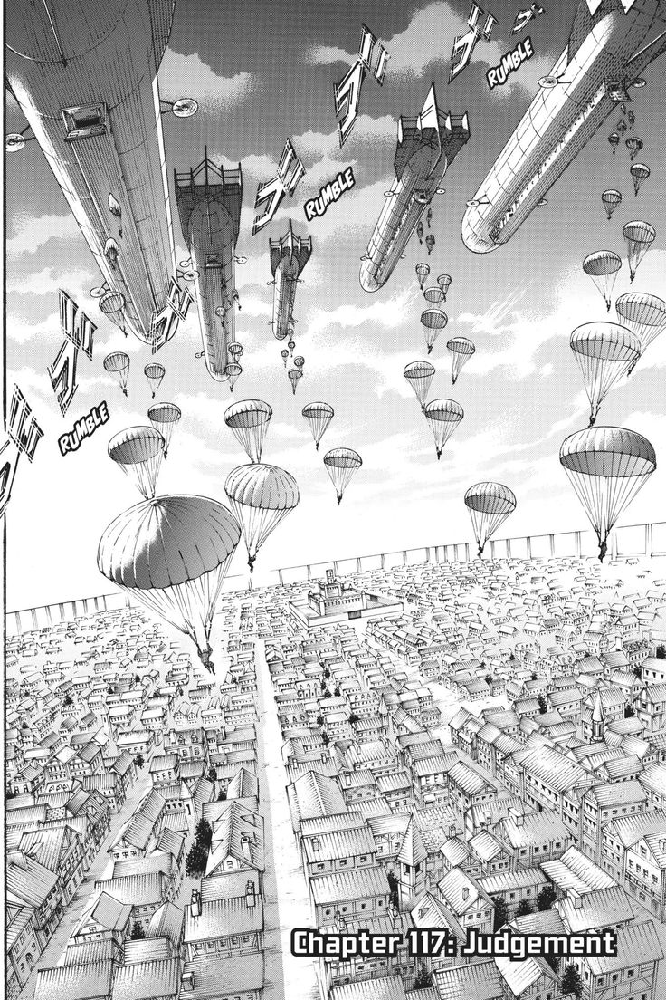
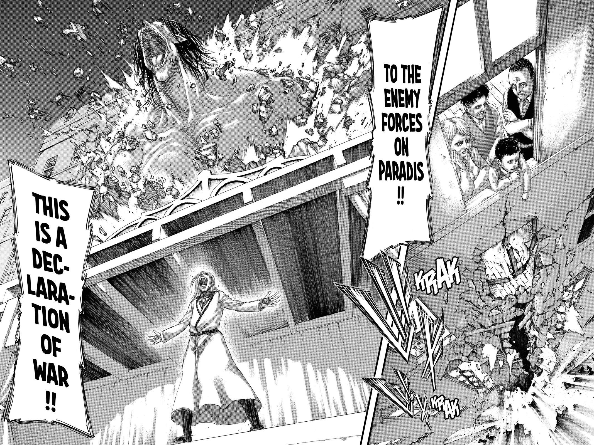
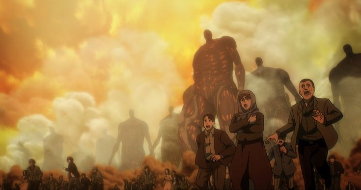
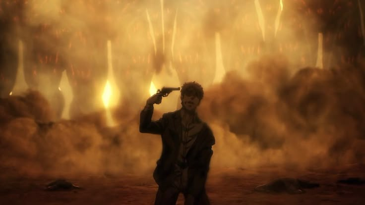
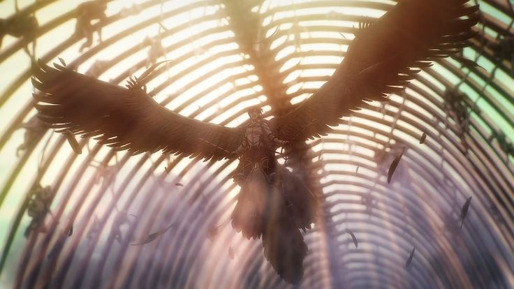

Another reason why I love Attack on Titan, or any animated show for that matter, is thanks to the unique and stunning visuals, and how they manage to compliment and further tell the story! This segment of the website is paying tribute to the aesthetic (and quite grotesque) beauty of Attack on Titan.
I believe art is one of the most compelling mediums with which a tale can be told. While words can get a point across efficiently, I feel art fully immerses the consumer in the media, in a way merging the two together. As viewers, we are tasked with reflecting a piece of our minds, our opinions, our feelings or past experiences onto the work we view, thus leaving a personal mark on the creation. It is, in my eyes, one of the most intimate ways of appreciating art, becoming one with it.
As such, here are some of my personal highlights artwork wise within AoT: moments, pannels and stills that have stuck with me ever since first seeing them!




















